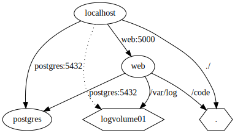
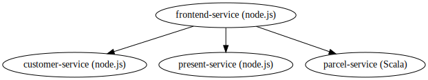
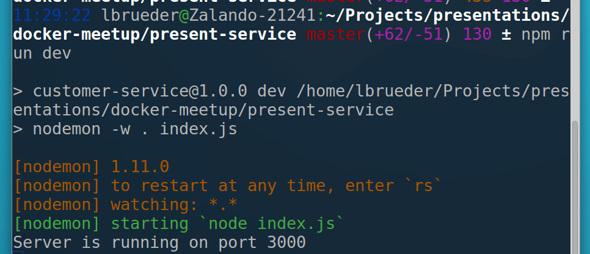
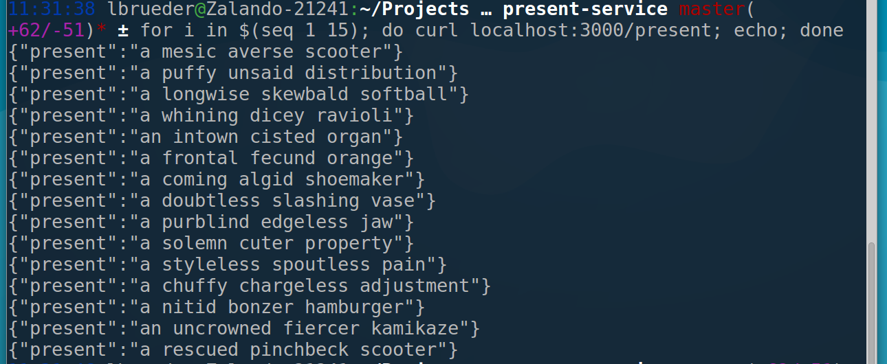
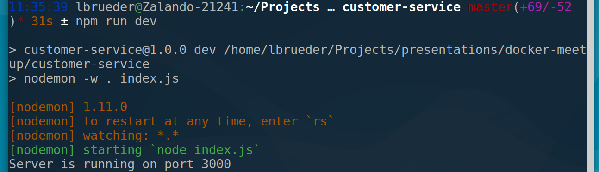
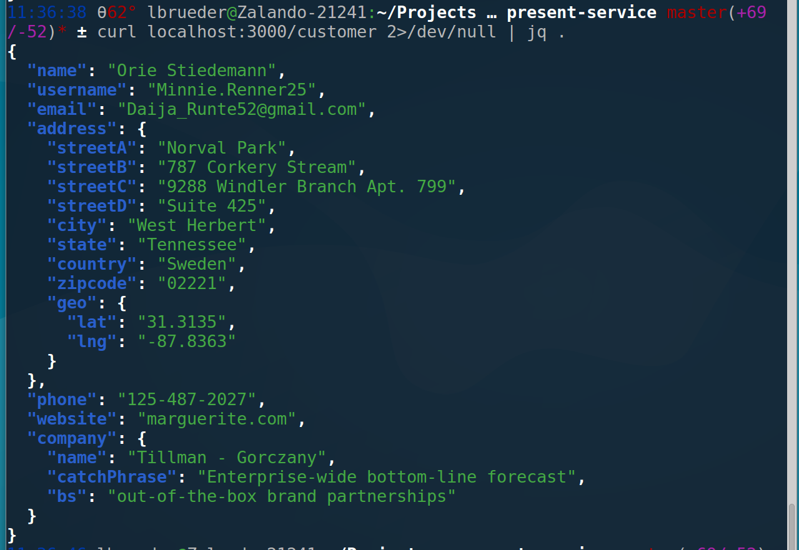
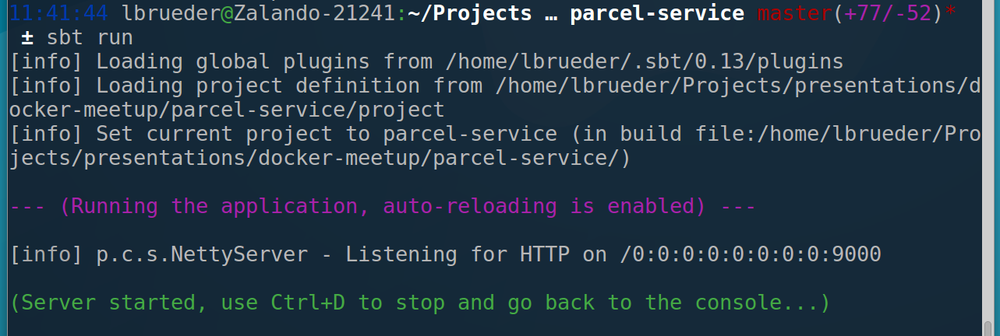
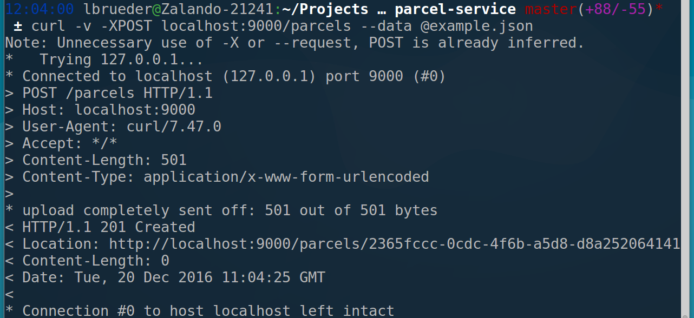
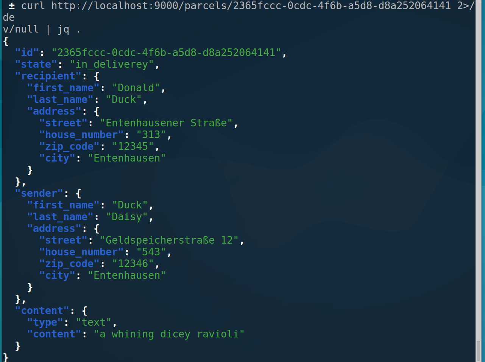
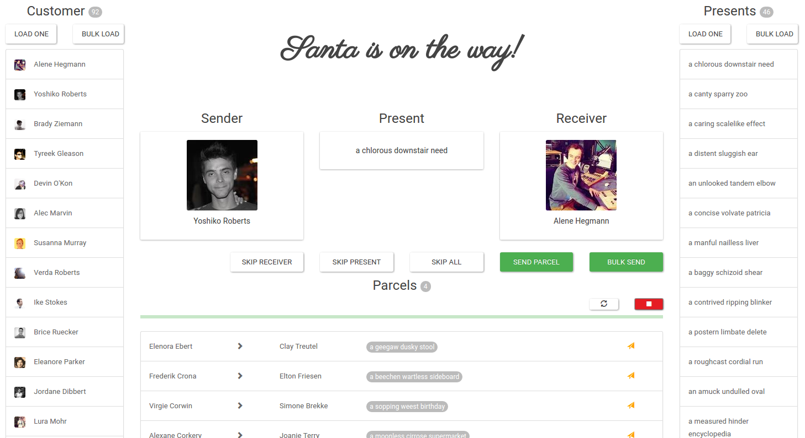

version: '2'
services:
web:
build: .
ports:
- "5000:5000"
volumes:
- .:/code
- logvolume01:/var/log
links:
- postgres
postgres:
image: postgres:latest
expose:
- "5432"
volumes:
logvolume01: {}Docker-compose for local testing of our cloud infrastructure
Hendrik Mittrop & Lena Brüder
Topics today
What is docker-compose?
Example services: Santa is on the way!
Dockerizing the services
Docker-compose: Simple version
Docker-compose: Enhanced version with routing
What is docker-compose?
multi-container docker applications
defined through YAML files

Example services: Santa is on the way!

 and backend services
and backend services
Present-service: Generate presents!


Customer-service: Generate customers!


Parcel-service: Store parcels and deliver them!


{
"recipient": {
"address": {
"street": "Entenhausener Straße",
"house_number": "313",
"city": "Entenhausen",
"zip_code": "12345"
},
"last_name": "Duck",
"first_name": "Donald"
},
"sender": {
"address": {
"street": "Geldspeicherstraße 12",
"house_number": "543",
"city": "Entenhausen",
"zip_code": "12346"
},
"last_name": "Daisy",
"first_name": "Duck"
},
"content": {
"type": "text",
"content": "a whining dicey ravioli"
}
}
Frontend-service: Controller for all the things

Dockerizing the services
Present-service
FROM node:latest # Create app directory RUN mkdir -p /usr/src/app WORKDIR /usr/src/app # Install app dependencies COPY package.json /usr/src/app/ RUN npm install --only=production # Bundle app source COPY . /usr/src/app EXPOSE 3000 CMD [ "npm", "start" ]
Customer-service
FROM node:latest # Create app directory RUN mkdir -p /usr/src/app WORKDIR /usr/src/app # Install app dependencies COPY package.json /usr/src/app/ RUN npm install --only=production # Bundle app source COPY . /usr/src/app EXPOSE 3000 CMD [ "npm", "start" ]
Frontend-service
FROM node:latest # Create app directory RUN mkdir -p /usr/src/app WORKDIR /usr/src/app # Install app dependencies COPY package.json /usr/src/app/ RUN npm install # Bundle app source COPY . /usr/src/app ENV app_mode prod EXPOSE 8080 CMD [ "npm", "run", "start-prod" ]
Parcel-service
Using sbt-native-packager:
import com.typesafe.sbt.packager.docker.Cmd
// exposing the play ports
dockerExposedPorts in Docker := Seq(9000, 9443)
dockerBaseImage := "java:latest"
dockerExposedVolumes in Docker := Seq("/opt/docker/logs")
defaultLinuxInstallLocation in Docker := "/opt/docker"
// fix "no Permission in /opt/docker/PID"-error
javaOptions in Universal ++= Seq(
"-Dpidfile.path=/tmp/play.pid"
)Docker-compose: Simple version
version: '2'
services:
parcel-service:
image: parcel-service:1.0-SNAPSHOT
environment:
APP_ENVIRONMENT: integration
expose:
- "9000"
present-service:
image: present-service:latest
environment:
APP_ENVIRONMENT: integration
expose:
- "3000"
customer-service:
image: customer-service:latest
environment:
APP_ENVIRONMENT: integration
expose:
- "3000"
controller:
image: frontend-service:latest
environment:
APP_ENVIRONMENT: integration
expose:
- "8080"
depends_on:
- parcel-service
- present-service
- customer-service
ports:
- 8080:8080Demo
Docker-compose: Enhanced version with routing
version: '2'
services:
parcel-service:
image: parcel-service:1.0-SNAPSHOT
environment:
APP_ENVIRONMENT: integration
VIRTUAL_HOST: parcel-service
VIRTUAL_PORT: 9000
depends_on:
- proxy
expose:
- "9000"
present-service:
image: present-service:latest
environment:
VIRTUAL_HOST: present-service
VIRTUAL_PORT: 3000
depends_on:
- proxy
expose:
- "3000"
customer-service:
image: customer-service:latest
environment:
VIRTUAL_HOST: customer-service
VIRTUAL_PORT: 3000
depends_on:
- proxy
expose:
- "3000"
frontend-service:
image: frontend-service:latest
environment:
VIRTUAL_HOST: frontend-service
VIRTUAL_PORT: 8080
expose:
- "8080"
depends_on:
- parcel-service
- present-service
- customer-service
- proxy
links:
- proxy:parcel-service
- proxy:present-service
- proxy:customer-service
ports:
- 8080:8080
proxy:
image: jwilder/nginx-proxy
environment:
DEFAULT_HOST: frontend-service
expose:
- "80"
ports:
- 80:80
volumes:
- /var/run/docker.sock:/tmp/docker.sock:roDemo
SSL Termination with Nginx proxy
frontend-service:
image: frontend-service:latest
environment:
VIRTUAL_HOST: frontend-service
CERT_NAME: server
VIRTUAL_PORT: 9443
VIRTUAL_PROTO: https
KEYSTORE_PASSWORD: suchsecret
KEYSTORE_PATH: /opt/docker/conf/manysecrets.keystore
HTTPS_PORT: 8443
volumes:
- ./cacerts:/etc/ssl/certs/java/cacerts:ro
expose:
- "8443"
depends_on:
- parcel-service
- proxy
links:
- proxy:parcel-service